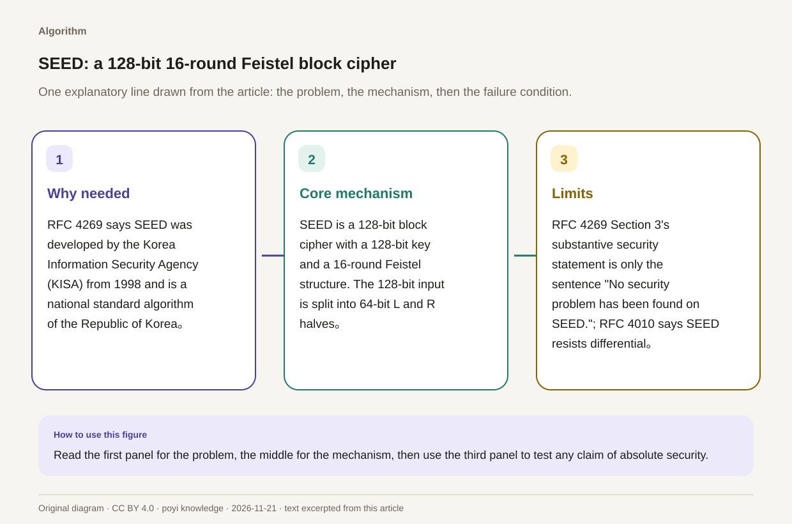
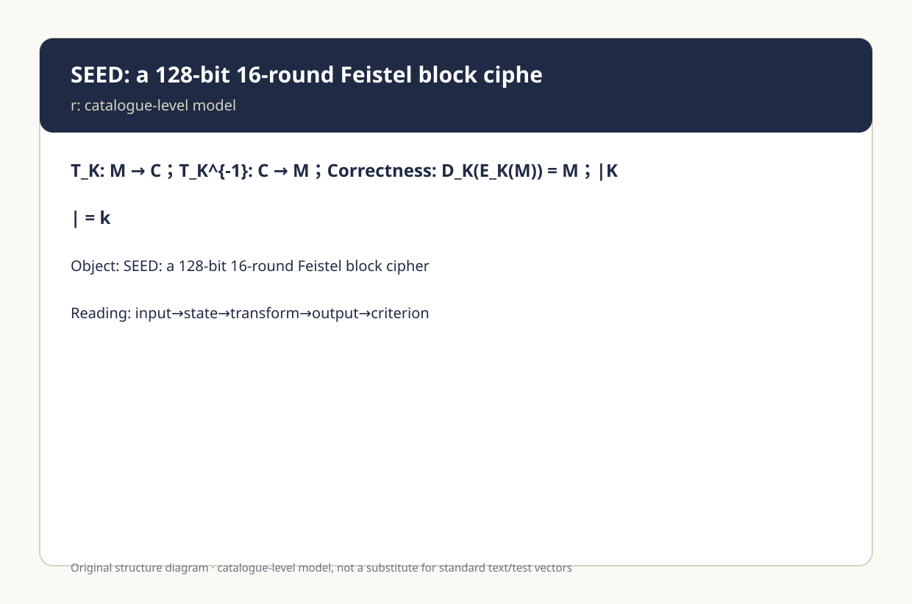

Principles
Algorithm: SEED (SEED 韩国内对称加密). SEED is a 128-bit block cipher with a 128-bit key and a 16-round Feistel structure. The 128-bit input is split into 64-bit L and R halves, and the right half R is fed to the round function F with a 64-bit subkey. Rounds 1 to 15 swap and mix the halves, while round 16 only updates L and performs no final swap:
for i = 1..15:
T = R
R = L XOR F(Ki, R)
L = T
L = L XOR F(K16, R)
C = L || R
Decryption is the inverse of encryption: it uses the same round structure with the subkeys in the order K16, K15, ..., K1. The F function splits the 64-bit input R into a high 32-bit half R0 and a low 32-bit half R1, and the subkey Ki into Ki0 and Ki1:
t0 = R0 XOR Ki0
t1 = R1 XOR Ki1
G1 = G(t0 XOR t1)
G2 = G(G1 + t0)
G3 = G(G2 + G1)
R0' = G3 + G2
R1' = G3
All additions are unsigned additions modulo 2^32. RFC 4269 Section 2.1 writes F as one nested formula; the step form above is equivalent and is verified by the Appendix B round intermediates. G maps four input bytes X3||X2||X1||X0 to four output bytes Z3||Z2||Z1||Z0, where X3 is the most significant byte:
m0 = FC, m1 = F3, m2 = CF, m3 = 3F
Z0 = (S0(X0) & m0) XOR (S1(X1) & m1) XOR (S0(X2) & m2) XOR (S1(X3) & m3)
Z1 = (S0(X0) & m1) XOR (S1(X1) & m2) XOR (S0(X2) & m3) XOR (S1(X3) & m0)
Z2 = (S0(X0) & m2) XOR (S1(X1) & m3) XOR (S0(X2) & m0) XOR (S1(X3) & m1)
Z3 = (S0(X0) & m3) XOR (S1(X1) & m0) XOR (S0(X2) & m1) XOR (S1(X3) & m2)
Z = Z3 || Z2 || Z1 || Z0
SEED has two 8x8 S-boxes, S0 and S1, with 256 entries each. For faster implementations the specification also defines four extended SS-boxes as 32-bit byte-concatenation tables:
SS0(X0) = (S0&m3) || (S0&m2) || (S0&m1) || (S0&m0)
SS1(X1) = (S1&m0) || (S1&m3) || (S1&m2) || (S1&m1)
SS2(X2) = (S0&m1) || (S0&m0) || (S0&m3) || (S0&m2)
SS3(X3) = (S1&m2) || (S1&m1) || (S1&m0) || (S1&m3)
Z = SS0(X0) XOR SS1(X1) XOR SS2(X2) XOR SS3(X3)
Appendix A lists all values of S0, S1 and SS0..SS3; this article checks them entry by entry, and all four SS-boxes are fully derived from S0/S1 and the masks. The key schedule splits the 128-bit key into Key0, Key1, Key2 and Key3 and produces a 64-bit subkey Ki=Ki0||Ki1 for every round:
for i = 1..16:
Ki0 = G(Key0 + Key2 - KCi)
Ki1 = G(Key1 - Key3 + KCi)
if i is odd:
Key0 || Key1 = (Key0 || Key1) >> 8
else:
Key2 || Key3 = (Key2 || Key3) << 8
Here >> 8 and << 8 are 64-bit rotations. Odd rounds rotate Key0||Key1 right by 8 bits, and even rounds rotate Key2||Key3 left by 8 bits. The sixteen KC constants are:
KC1 = 9E3779B9 KC2 = 3C6EF373 KC3 = 78DDE6E6 KC4 = F1BBCDCC
KC5 = E3779B99 KC6 = C6EF3733 KC7 = 8DDE6E67 KC8 = 1BBCDCCF
KC9 = 3779B99E KC10 = 6EF3733C KC11 = DDE6E678 KC12 = BBCDCCF1
KC13 = 779B99E3 KC14 = EF3733C6 KC15 = DE6E678D KC16 = BCDCCF1B

Why it matters
RFC 4269 says SEED was developed by the Korea Information Security Agency (KISA) from 1998 and is a national standard algorithm of the Republic of Korea, with TTAS.KO-12.0004 (September 1998) as its normative reference. It uses S-boxes and permutations balanced with contemporary computing technology, has a 16-round Feistel structure, and is claimed to resist differential analysis, linear analysis and related-key analysis.
RFC 4010 adds implementation-level design goals: SEED is easy to implement in software and hardware, uses less memory than some algorithms, generates keys without degrading security, and suits resource-constrained environments "such as mobile devices and smart cards". It also calls SEED a national industrial association standard, says it underwent public scrutiny, is considered cryptographically secure by ISO/IEC JTC 1/SC 27 and Japan's CRYPTREC, and is widely used for electronic commerce and financial services in Korea.
RFC 4269 Section 3's substantive security statement is only the sentence "No security problem has been found on SEED.", followed by references to ISO/IEC JTC 1/SC 27 and CRYPTREC documents. This article treats that as a 2005 RFC assessment, not as a formal proof against every attack.
Applications
CMS: RFC 4010 (February 2005, Standards Track) specifies SEED for CMS content encryption and key wrapping. The content-encryption OID is id-seedCBC, using CBC with a 16-byte IV; the AlgorithmIdentifier parameters MUST contain the IV, and the plaintext is padded according to CMS Section 6.3. The key-wrap OID is id-npki-app-cmsSeed-wrap, whose parameters MUST be absent; wrapping is identical to RFC 3394 AES key wrap with AES replaced by SEED.
TLS: RFC 4162 (August 2005, Standards Track) defines six SEED CBC SHA cipher suites for TLS: one each for TLS_RSA, TLS_DH_DSS, TLS_DH_RSA, TLS_DHE_DSS, TLS_DHE_RSA and TLS_DH_anon, with code points 0x0096 through 0x009B. RFC 8996 (March 2021, BCP 195) obsoletes the use of TLS 1.0 and TLS 1.1 and prohibits fallback, replacing mandatory minimum protocol version references to TLS 1.0/1.1 in RFC 4162 and other documents with TLS 1.2; the SEED suites themselves are not deprecated and remain usable with TLS 1.2. RFC 8446 (TLS 1.3) Appendix B.4 defines only five AEAD-based cipher suites (AES-128-GCM, AES-256-GCM, ChaCha20-Poly1305, AES-128-CCM and AES-128-CCM-8), with no SEED suite; this article does not claim SEED support in TLS 1.3.
Test vectors: RFC 4269 Appendix B gives four single-block vectors:
B.1 K = 00000000000000000000000000000000
M = 000102030405060708090A0B0C0D0E0F
C = 5EBAC6E0054E166819AFF1CC6D346CDB
B.2 K = 000102030405060708090A0B0C0D0E0F
M = 00000000000000000000000000000000
C = C11F22F20140505084483597E4370F43
B.3 K = 4706480851E61BE85D74BFB3FD956185
M = 83A2F8A288641FB9A4E9A5CC2F131C7D
C = EE54D13EBCAE706D226BC3142CD40D4A
B.4 K = 28DBC3BC49FFD87DCFA509B11D422BE7
M = B41E6BE2EBA84A148E2EED84593C5EC7
C = 9B9B7BFCD1813CB95D0B3618F40F5122
B.1 and B.2 are complementary: one has an all-zero key and an increasing plaintext, while the other has an increasing key and an all-zero plaintext. This article's teaching implementation reproduces all four vectors and verifies that decryption returns the original plaintext.
Appendix B.1 also lists Ki0, Ki1 and the per-round input-state L0, L1, R0 and R1 for all sixteen rounds: the round-1 input is the plaintext, and the round-i input is the state after round i-1. It therefore checks the key schedule and round function rather than only the final ciphertext. The implementation checks that table round by round; for example round 1 has Ki0=7C8F8C7E and Ki1=C737A22C, and round 16 has Ki0=71891150 and Ki1=98B255B0. Row 1 has input L=0001020304050607 and R=08090A0B0C0D0E0F, row 16 has input L=1A415792A02B8C54 and R=19AFF1CC6D346CDB, and after round 16 the state is L=5EBAC6E0054E1668 and R=19AFF1CC6D346CDB.

Limits & attacks
RFC 4269 Section 3's substantive security statement is only the sentence "No security problem has been found on SEED."; RFC 4010 says SEED resists differential, linear and related-key analysis and is considered secure by ISO/IEC JTC 1/SC 27 and CRYPTREC. These are assessments in 2005 documents, not formal proofs against every attack model, and they do not guarantee that no better analysis will appear. This article does not expand them into an absolute security claim, and it does not cite unverified attack papers to claim that SEED has been broken.
RFC 4269 obsoletes RFC 4009 because RFC 4009's F-function and SS-box definitions were ambiguous, not because the algorithm was broken; the algorithm itself did not change. Implementers should follow RFC 4269's clearer definitions rather than copying the older pseudo-code.
SEED's protocol position needs to be stated carefully: it is a Korean national standard, and the 2005 RFC documents describe it as widely used for Korean electronic commerce and financial services; the CMS id-seedCBC and key-wrap OIDs remain part of a Standards Track specification; BCP 195 obsoletes the use of TLS 1.0/1.1 and updates RFC 4162's minimum version reference to TLS 1.2, so the SEED suites themselves remain usable, while TLS 1.3 has no SEED suite. That SEED was once standardized does not make it available by default in the latest protocol.
At the implementation level, this article's teaching code performs byte-indexed lookups in S0/S1 and the SS-boxes and is not constant-time; caches and timing may leak key-dependent access patterns. It does not generate keys and implements no mode of operation, IV management, padding, integrity protection or side-channel defence, so it must not be used to protect real data. SEED defines only a block cipher; the protocol layer must handle those matters.
History
SEED was developed by KISA from 1998. RFC 4269 cites TTAS.KO-12.0004 (September 1998) as a normative reference and describes SEED as a national standard algorithm of the Republic of Korea, widely used for electronic commerce and financial services in wired and wireless communications.
RFC 4009 was the earlier IETF description; RFC 4269 was published by H.J. Lee, S.J. Lee, J.H. Yoon, D.H. Cheon and J.I. Lee in December 2005 with Informational category and obsoletes RFC 4009 to correct its ambiguous F-function and SS-box definitions, without changing the algorithm. RFC 4010 specified CMS usage as Standards Track in February 2005; RFC 4162 defined six TLS suites as Standards Track in August 2005; RFC 8996 deprecated TLS 1.0/1.1 and updated RFC 4162 in 2021.
ISO/IEC 18033-3:2010 Edition 2 lists SEED with AES and Camellia as 128-bit block ciphers, and that edition was still confirmed as current in September 2025. This article's SEED entity is the block cipher only; AES and Camellia are separate entities, CMS and TLS are protocols that use SEED, and ISO/IEC 18033-3 is a standardization document rather than the algorithm.
Worked example & verification
Worked example
Take one published or standard test vector, record the input, the ordered steps and the byte-exact output, then compare with an independent implementation. Where no citable numeric vector is available, the entry records only structural steps and does not invent an output.
References
- Wikipedia search entry for SEED 韩国内对称加密. https://zh.wikipedia.org/w/index.php?search=SEED%20%E9%9F%A9%E5%9B%BD%E5%86%85%E5%AF%B9%E7%A7%B0%E5%8A%A0%E5%AF%86
- Handbook of Applied Cryptography (Menezes, van Oorschot, Vanstone). https://www.cacr.math.uwaterloo.ca/hac/